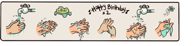

Washing Hands
Next

How to wash your hands
1. Wet hands with clean, running water. Turn off the tap.
2. Lather your hands together by rubbing them together with soap.
3. Lather the back of your hands, between your fingers and under your nails.
4. Scrub your hands for atleast 20 seconds. You can hum the whole “Happy Birthday” song as timer
Definitely wash your hands at the following times:
1. After blowing your nose, coughing or sneezing
2. Before and after preparing food
3. After using the toilet
4. After touching or playing with pets
5. Whenever your hands look dirty
6. After cleaning the house
7. After touching surfaces/items the patient may have touched
8. After returning from outside the house
If the patient has a need to interact with a family member other than the caregiver, then the patient must wash hands first put on the mask and only then come out of the isolation room.
The caregiver should wash hands thoroughly after every interaction with the patient